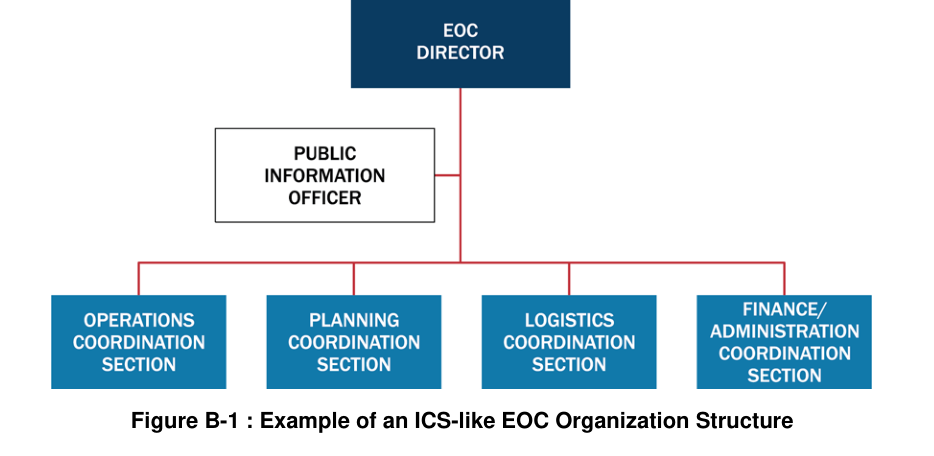
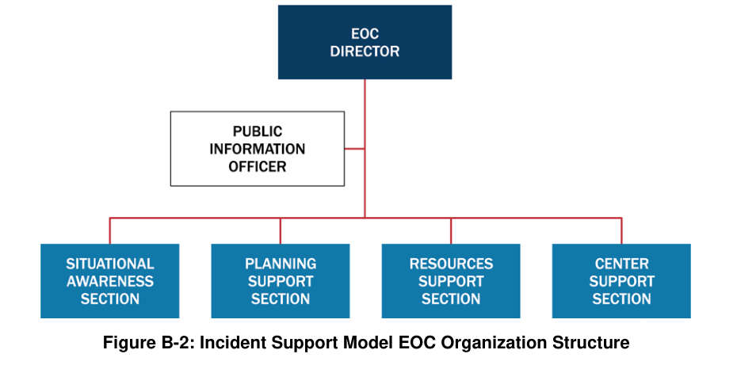
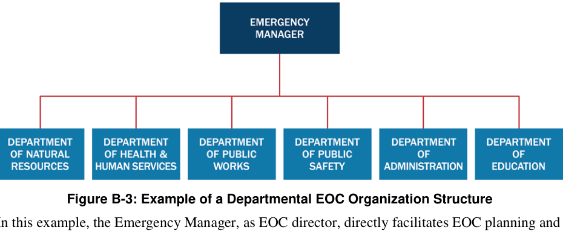

부록 B의 학습 안내
Appendix B — Overview · EOC 3가지 조직모델을 학습하는 독립형 노트
Appendix B는 비상운영센터(Emergency Operations Center, EOC)의 세 가지 조직구조를 소개하는 부록입니다. EOC는 현장 ICS와 구별되는 상황정보·자원조정·계획·운영 지원 기능을 수행하며, 조직모델은 관할의 임무와 여건에 따라 선택합니다.
| 유형 | 조직 원리 | 핵심 특징 |
|---|---|---|
1. ICS / ICS 유사형 | ICS의 익숙한 조직을 EOC 조정체계로 활용 | 작전조정·계획조정·지원조정·재무행정조정 기능을 구분 |
2. 사고지원모델(ISM) | 상황인식 기능 분리·자원지원 기능 통합 | Situational Awareness / Planning Support / Resources Support / Center Support |
3. 부서 중심형 | 평상시 부서별 책임과 관계를 EOC에 활용 | 기관·부서별 대표자가 평시 분야를 중심으로 협력 |
Appendix B는 세 모형을 발전단계나 우열 순서로 규정하지 않습니다. EOC의 법적 권한, 임무, 참여기관 및 사용 가능한 인력·시설에 따라 적용합니다.
Appendix B에 있는 원본 Figure B-1~B-3을 영어 원형 그대로 보존했습니다. 별도의 Table B 표는 이 부록에 제시되지 않습니다.
FEMA (2017), National Incident Management System, Appendix B, 인쇄 pp.116–123에 근거합니다.
ICS 또는 ICS 유사 EOC
EOC Tab 1 — ICS / ICS-like EOC Structure · ICS 기능을 EOC의 조정 임무에 맞춰 변형
현장 ICS에 익숙한 구조를 활용하면서도 EOC 특성에 맞게 직위명을 Coordination Section 등으로 조정할 수 있습니다.

| 기능 | EOC에서의 주 업무 |
|---|---|
EOC Director / Command Staff | EOC 지원 우선순위·정보·안전·연락 관리 |
Operations Coordination | 여러 기관 활동 조정, 현장과 EOC 사이 필요 조정 |
Planning Coordination | 상황정보, EOC 계획·분석·향후 수요 |
Logistics Coordination | 자원 요청·확보, 통신·시설·지원서비스 |
Finance/Administration Coordination | 재무·행정 및 비용·계약·지출 관련 관리 |
EOC의 Operations Coordination을 현장의 Operations 전술지휘와 동일하게 해석하지 않습니다. EOC에서는 현장 지원·기관 간 조정의 맥락에서 기능을 운용할 수 있습니다.
- 기관 자체 자원은 해당 기관 대표가 직접 요청·추적할 수도 있음
- EOC는 자원주문 경로와 추적 책임을 자체적으로 정해 혼선을 방지
사고지원모델(ISM) EOC
EOC Tab 2 — Incident Support Model · 상황인식 기능을 분리하고 자원지원 창구를 통합
ISM 모델은 EOC가 직접 현장 전술을 수행하기보다 정보·계획·자원·센터운영 지원에 집중하도록 설계한 형태입니다.

| 부서 | 주요 책임 |
|---|---|
Situational Awareness | 사고정보 수집·분석·상황보고, GIS·지도·브리핑 자료 |
Planning Support | 현재·미래 대비계획, 비상대응·복구 및 전환계획 지원 |
Resources Support | 필요 자원의 확보·주문·추적, 상호지원(EMAC 포함)·구매·임대 |
Center Support | EOC 운영을 위한 IT·통신·행정·시설·급식 등 내부지원 |
현장 ICS의 Planning 상황정보 기능을 별도 부서로 분리하고, Operations·Logistics 및 일부 재무 구매업무를 Resources Support에 통합하는 방향입니다. 실제 현장작전 조직도와 다릅니다.
부서 중심 EOC 조직
EOC Tab 3 — Departmental EOC Structure · 평시 부서 간 관계를 살려 공동 조정하는 방식
지자체·기관이 평소의 부서별 담당 기능과 관계를 유지한 채 EOC를 운영할 수 있습니다. 긴급관리 책임자 또는 고위 관리자가 각 부서·기관의 대응지원을 조정합니다.

| 원문 예시 부서 | EOC에서의 대표적 협력 기능 |
|---|---|
자연자원 | 환경·수질·공원·산불 등 |
보건·인적서비스 | 병원·진료소·구호·보호·역학조사 등 |
공공사업 | 도로·상하수도·연료·전력·교통·폐기물 |
경찰·소방·EMS | 소관 긴급대응 기능 및 자원 조정 |
행정 | 공보·재정·교육·민간·부족정부 연락 |
교육기관 | 학교시설·통학버스·임시보호시설 등 |
ICS 유사형, ISM형, 부서형은 원문에서 상하위 등급이나 발전단계로 제시되지 않습니다. 각 관할의 임무·조직·자원·운영여건에 따른 대안입니다.
복습 문제
Quick Review · 원문을 기반으로 한 확인 문제 6개
질문을 누르면 정답과 해설이 펼쳐집니다.
01Appendix B에서 비교하는 EOC 조직형태 세 가지는?
02ICS/ICS 유사 EOC의 작전조정부는 현장 전술 지휘와 동일한가?
03ISM 모형에서 상황정보 기능은 어느 조직으로 분리되는가?
04ISM의 Resources Support Section이 담당하는 주요 기능은?
05부서 중심 EOC 조직은 무엇을 활용하는가?
06세 EOC 모형은 발전단계·우열 순위인가?
출처·사용 안내
Sources & Use · 2017 NIMS 부록 원문과 요약자료의 구분
출처: Federal Emergency Management Agency. (2017). National Incident Management System (Third Edition), Appendix B (pp.116–123).
| 요소 | 수록 형태 |
|---|---|
본문 | Appendix B 원문의 한국어 학습용 개조식 요약 |
원문 시각자료 | Figure B-1~B-3 원형 |
페이지 | 인쇄 페이지 기준 pp.116–123 (첨부 PDF 파일 쪽수는 10쪽 뒤) |
2017년 NIMS 제3판에 대한 학습용 설명입니다. 정식 교육훈련 또는 현행 법률·개정지침을 대체하지 않으며, 새로운 국내 제도 비교나 외부 연구를 임의로 추가하지 않았습니다.